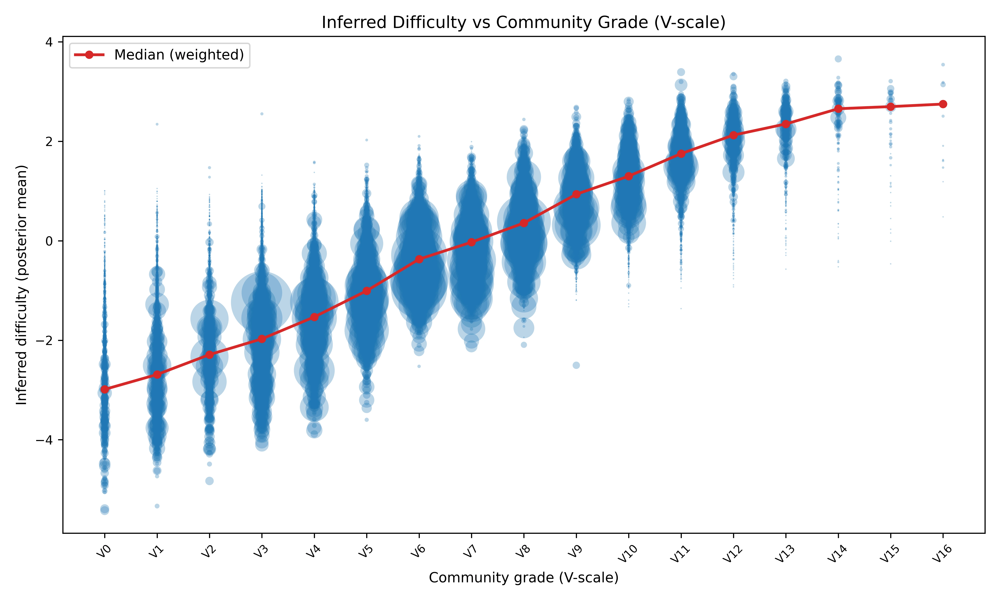
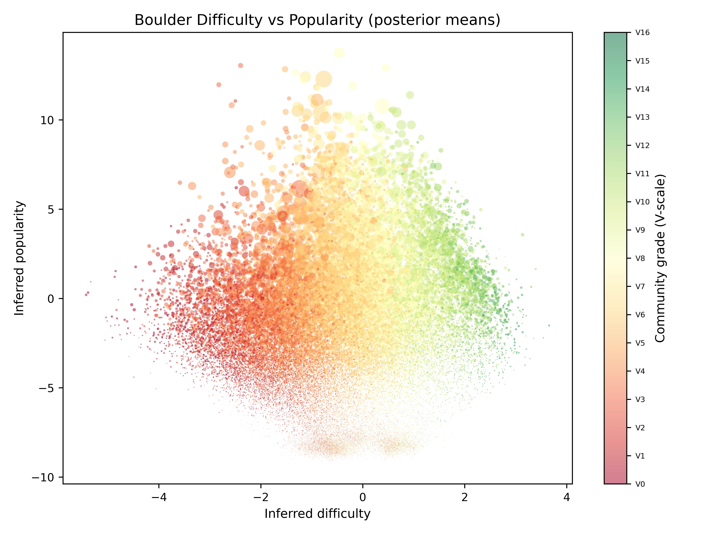

The problem with grades
Every boulder problem carries a grade—a single number meant to capture how hard the climb is. The first ascensionist proposes one, later climbers agree or disagree, and the consensus drifts over the years. Two problems with the same grade can feel wildly different, and it is perfectly possible for a “soft” 7A to be easier than a “hard” 6C+.
Some of this is irreducibly personal. A line can suit a climber’s height, flexibility, or style. But subjectivity cannot be the whole story: some grades really do seem wrong. Most climbers have met a supposed warm-up that became the session’s project, or cruised a problem at their limit and quietly suspected a generous grade.
So I wanted to estimate difficulty without looking at the grade at all. Instead, I used only tick lists: who climbed what, and whether they flashed it. If grades contain a real signal, that signal should be recoverable from the pattern of ascents alone.
A mathematical model
Let $\mathcal{B}=\{b_1,\ldots,b_n\}$ be the set of boulders and $\mathcal{C}=\{c_1,\ldots,c_m\}$ the set of climbers. At first sight, each record is just a pair $(c_i,b_j)$ saying that climber $c_i$ climbed boulder $b_j$. We assign one hidden number to each side:
- climber ability ($\theta_i$)—how strong climber $i$ is;
- boulder difficulty ($d_j$)—how hard boulder $j$ is.
A natural first model is
$$P(c_i\text{ sends }b_j\mid c_i\text{ tries }b_j)=\sigma(\theta_i-d_j),$$where $\sigma(x)=1/(1+e^{-x})$ is the logistic function. This is the same basic idea as a Bradley–Terry model, and closely related to Elo ratings. Imagine a tournament with climbers on one team and boulders on the other. A send is a win for the climber. If ability and difficulty are equal, the model gives the climber a 50% chance; move them apart and the odds change smoothly.
For example, if I have roughly even odds on a 6C while Will Bosi has even odds on an 8C, then $\theta_{\text{Marco}}\approx d_{\text{6C}}$ and $\theta_{\text{Bosi}}\approx d_{\text{8C}}$. The model correctly predicts that my chance on the 8C is tiny and his chance on the 6C is close to one.
But Will Bosi’s tick list does not contain every 6C in the world. The equation predicts success given an attempt; the data rarely tell us whether an attempt happened. In our imaginary tournament, we record every match won by a climber, but a missing result could mean either that the boulder won or that the match was never played. Fit the simple model to that data and it produces nonsense.
Prolificity and popularity
To separate strength from opportunity, we introduce two more hidden quantities:
- climber prolificity ($\alpha_i$)—how likely a climber is to try things at all;
- boulder popularity ($\pi_j$)—how likely a problem is to attract an attempt.
The first useful version of the model is therefore
$$P(\text{try}_{ij})=\sigma(\alpha_i+\pi_j),$$ $$P(\text{send}_{ij}\mid\text{try}_{ij})=\sigma(\theta_i-d_j).$$Their product gives the chance that a particular ascent appears. This already recovers some information: a popular boulder is no longer automatically mistaken for an easy one, and a prolific climber is no longer automatically mistaken for a strong one. But it leaves out an important fact about how climbers choose projects.
The Goldilocks effect
Climbers do not sample rock uniformly. Beginners generally do not pull onto 8Cs, but elite climbers also do not spend their day collecting every 4 in the forest. We tend to choose problems in a window around our level: not impossibly hard, not boringly easy, but just right.
I model this selection process with a quadratic penalty:
$$\operatorname{logit}P(\text{try}_{ij})= \alpha_i+\pi_j-\gamma_i(\theta_i-d_j-\mu_i)^2.$$The try probability peaks at a preferred difficulty. The parameter $\gamma_i>0$ controls how narrow the window is: a high value describes a selective projector, while a low value describes someone happy to try a broad range. The offset $\mu_i$ moves the centre of that window for each climber. Both are learned from the data, rather than fixed by hand.
Flashes
Flashes provide a second, particularly informative test of the ability–difficulty gap:
$$P(\text{flash}_{ij}\mid\text{send}_{ij})= \sigma(\theta_i-d_j-\beta),$$where the global $\beta$ is the extra margin normally needed to send first go. The complete model is a cascade: choose whether to try, then whether to send, then whether that send was a flash.
A small number of users explicitly log failed attempts, and the model can use them. They are negligible compared with the ascent data, however, so they do not solve the missing-match problem. For an unlogged climber–boulder pair, the likelihood therefore keeps both explanations alive: perhaps it was never tried; perhaps it was tried and not sent. We sum over those possibilities instead of pretending to know which one occurred.
Going Bayesian
A point estimate would let me rank boulders, but it would hide the most important qualifier: how sure are we? One obscure problem with two very strong ascensionists might look impossibly hard by accident. A classic with hundreds of ascents gives much stronger evidence.
I therefore made the model Bayesian. Abilities, prolificities, popularities, try-curve parameters, and difficulties are distributions rather than isolated fitted numbers. The posterior gives a mean and a credible interval for every climber and boulder. More data usually mean a narrower interval.
This also changes how rankings should be read. Below I rank by the lower end of the 95% credible interval, not simply by the mean. To place highly, a climber or boulder must be not only impressive but convincingly so.
Training at scale
The raw public data contain about 1.36 million ascent records and metadata for roughly 185,000 boulders. After restricting the analysis to boulders with usable ascent data, the fitted dataset contains 31,616 climbers and 50,514 boulders. A record distinguishes a flash from a later send and, in the comparatively rare cases where it is logged, an unsuccessful go.
Positive records alone are not enough: the model also needs to see things that did not appear on a tick list. For each climber, I take boulders in crags they visited but did not log as ambiguous negatives. This is a much more plausible comparison set than every boulder on Earth. During training I subsample ten of these negatives for every positive observation, both to keep computation manageable and to stop the enormous number of missing pairs from overwhelming the signal.
The community grade is not an input to the likelihood. It is only used afterwards as an external check on what the model learned.
The model has around 82,000 latent parameters and millions of potential observations, so conventional Markov chain Monte Carlo would be painfully slow. I used Automatic Differentiation Variational Inference (ADVI) instead, approximating the posterior with a full-rank multivariate Gaussian and optimizing it on minibatches of 4,096 observations.
Training used Adam with a learning rate of 0.003 and was scheduled for two million iterations. I saved checkpoints throughout and selected the 340,000-iteration checkpoint that performed best on the held-out grade validation, then drew 3,000 samples from its approximate posterior to calculate intervals. Variational inference is an approximation—especially in the tails—but it makes a model of this size practical.
For validation, I regress the withheld community grade on inferred difficulty, weighting well-travelled boulders more heavily. Difficulty explains 75% of the variance in grades ($R^2=0.75$).
Results

The diagonal is the first result that matters. A latent number extracted only from who sent what lines up closely with the labels climbers have negotiated over decades. Grades are noisy and personal, but they are not arbitrary.
The departures from the line are also informative. A point far above its grade’s median behaves like a sandbag: its ascent pattern resembles harder boulders. A point below looks like a soft touch. The distance is not a final verdict on a climb—style, morphology, and biased visitors still matter—but it is a useful way to find disagreements worth investigating.
Difficulty and popularity

Popularity and difficulty are only weakly related, which is exactly why both are needed. A roadside classic can be easy and enormously popular; a difficult eliminate in an obscure sector can receive almost no traffic. A model with only one boulder parameter would confuse the two.
Here popularity is mainly a nuisance variable: accounting for it prevents the model from treating a large number of ascents as direct evidence that a boulder is easy. It may capture accessibility, reputation, quality, or simply how often climbers visit the surrounding area; the model does not distinguish between them.
Climber ability
The model has not seen competition results, sponsorships, or biographies; it only knows ascent logs. Nevertheless, the top of the ability ranking includes many established elite climbers. The ordering below uses the lower bound of each 95% credible interval; “ability” is in the model’s latent units and should only be read comparatively.
| Rank | Climber | Ability | 95% low | Logged ascents |
|---|---|---|---|---|
| 1 | Jules Marchaland | 4.29 | 4.11 | 53 |
| 2 | Vadim Timonov | 4.04 | 3.89 | 166 |
| 3 | Noah Wheeler | 4.05 | 3.85 | 93 |
| 4 | Andrew Nimmer | 3.86 | 3.73 | 336 |
| 5 | Matt Fultz | 3.72 | 3.64 | 371 |
| 6 | Mejdi Schalck | 3.73 | 3.55 | 53 |
| 7 | Adam Ondra | 3.70 | 3.55 | 156 |
| 8 | William Bosi | 3.72 | 3.55 | 41 |
| 9 | Kali Tolsma | 3.81 | 3.47 | 23 |
| 10 | Fabrice Landry | 3.72 | 3.44 | 334 |
| 11 | Pietro Vidi | 3.52 | 3.41 | 180 |
| 12 | Yannick Flohé | 3.64 | 3.40 | 54 |
| 13 | Nimrod Marcus | 3.63 | 3.37 | 50 |
| 14 | James Webb | 3.41 | 3.36 | 916 |
| 15 | David Firnenburg | 3.38 | 3.32 | 393 |
| 16 | Thilo Jeldriksønn | 3.45 | 3.32 | 159 |
| 17 | Peter Satt | 3.38 | 3.30 | 175 |
| 18 | Solomon Kemball | 3.58 | 3.30 | 45 |
| 19 | Keita Mogaki | 3.44 | 3.30 | 91 |
| 20 | Piotr Schab | 3.44 | 3.30 | 154 |
The uncertainty-aware ranking matters. Kali Tolsma has a higher posterior mean than several climbers above them, but only 23 logged ascents make the interval wide. James Webb’s mean is lower, while 916 ascents make the estimate much more precise. A substantial record can therefore rank above a stronger but less certain estimate.
More broadly, recovering names such as Ondra, Bosi, Schalck, Fultz, Flohé, and Webb is a useful sanity check. The model was not told who the professionals are; it inferred their ability from their ascent records.
Boulder difficulty
The same ranking can be made for boulders. Again, these are ordered by the lower end of the difficulty interval, not the point estimate. “Predicted” maps latent difficulty back onto the V-scale learned in the validation regression.
| Rank | Boulder | Area | Grade | Predicted | Ascents |
|---|---|---|---|---|---|
| 1 | Power of Now | Magic Wood | 8B+ (V14) | V15.8 | 26 |
| 2 | Foxy Lady (dyno) | Magic Wood | 8A (V11) | V15.2 | 33 |
| 3 | Never Ending Story 1 | Magic Wood | 8A+ (V12) | V15.0 | 32 |
| 4 | Ephyra | Chironico | 8C+ (V16) | V15.6 | 7 |
| 5 | Never Ending Story 2 | Magic Wood | 8A (V11) | V14.6 | 84 |
| 6 | White Stripe | Brione | 8A+ (V12) | V15.1 | 10 |
| 7 | Mystic Stylez | Magic Wood | 8B+ (V14) | V14.6 | 29 |
| 8 | Pagan Poetry Low | Left Fork | 8B (V13) | V14.5 | 42 |
| 9 | Direct North | Buttermilks | 8B+ (V14) | V14.6 | 34 |
| 10 | The Mandala Sit | Buttermilks | 8B (V13) | V14.4 | 42 |
This is not merely a list of the largest community grades. Foxy Lady (dyno), listed at 8A, ranks second because the people who log it otherwise have unusually strong records. That is precisely the kind of discrepancy the model is designed to expose.
The table should not be read as a definitive regrading. Several Magic Wood problems cluster near the top, and large differences such as V11 to V15 may reflect style, selection, data quality, or other modelling limitations rather than four missing grades. The ranking is better treated as a way to ask what is unusual about a problem’s ascent pattern.
Explore the disagreements
Every boulder in the fitted dataset receives an inferred difficulty, a credible interval, and a residual from the median boulder at its grade. I built a table where you can search by name or area, filter by grade and ascent count, and sort by the size or statistical significance of the disagreement.
What the model cannot know
The model compresses a great deal of climbing into one ability axis and one difficulty axis. It does not know whether a boulder is a slab, a roof, or a paddle dyno. It does not know a climber’s height or span, whether conditions were terrible, whether holds broke, or whether a log refers to the correct variation. It also treats ability as fixed, although real climbers improve, get injured, and age.
The negative data are necessarily approximate. Visiting a crag does not mean seeing every boulder there, and public tick lists are a self-selected sample of climbers and ascents. Finally, ADVI’s credible intervals are approximate and can be overconfident.
These are not minor footnotes; they explain why an inferred grade should start a conversation, not end one.
Despite these limitations, the central result is encouraging. Starting with incomplete tick lists, the model reconstructs much of the community grade scale, distinguishes popularity from difficulty, identifies many strong boulderers, and points to problems where the ascent data disagree with the published grade. This suggests that ascent histories contain a useful independent measure of boulder difficulty.